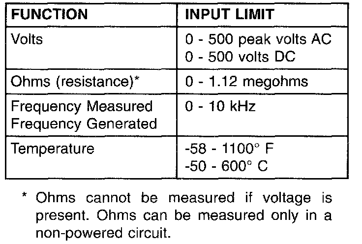

DRBIII Safety Information

WARNING: Exceeding the limits of the DRB multimeter is dangerous. It can expose you to serious or possibly fatal injury. Carefully read and understand the cautions and the specification limits.
- Follow the vehicle manufacturer's service specifications at all times.
- Do not use the DRB if it has been damaged.
- Do not use the test leads if the insulation is damaged or it metal is exposed.
- To avoid electrical shock, do not touch the test leads, tips, or the circuit being tested.
- Choose the proper range and function for the measurement. Do not try voltage or current measurements that may exceed the rated capacity.
- Do not exceed the limits shown in the table:
- Voltage between any terminal and ground must not exceed 5OOv DC or 5OOv peak AC.
- Use caution when measuring voltage above 25v DC or 25v AC.
- The circuit being tested must be protected by a 10A fuse or circuit breaker.
- Use the low current shunt to measure circuits up to 10A. Use the high current clamp to measure circuits exceeding 10A.
- When testing for the presence of voltage or current, make sure the meter is functioning correctly. Take a reading of a known voltage or current before accepting a zero reading.
- When measuring current, connect the meter in series with the load.
- Disconnect the live test lead before disconnecting the common test lead.
- When using the meter function, keep the DRB away from spark plug or coil wires to avoid measuring error from outside interference.